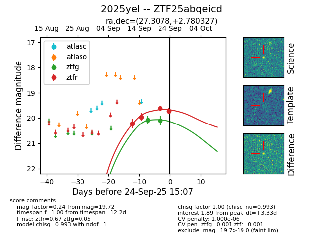
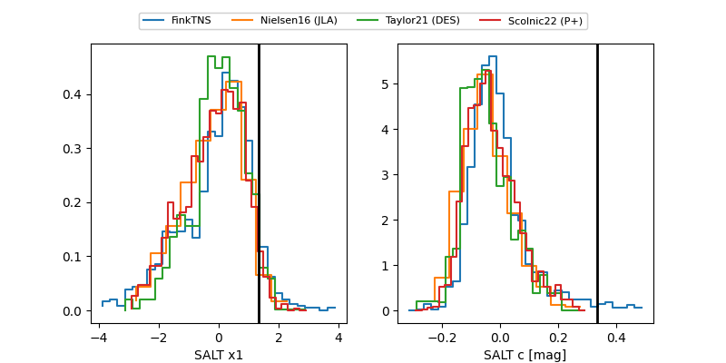

FINK: ZTF25abqeicd
Lasair: ZTF25abqeicd
ALeRCE: ZTF25abqeicd
TNS: 2025yel
YSE: 2025yel
ZTF25abqeicd (ztf,fink)
2025yel (tns,yse)
equatorial (ra, dec) = (27.3078,+2.78033)
galactic (l, b) = (150.1657,-57.00391)


last ztfg=20.10, ztfr=19.72
2 ztfg, 4 ztfr detections